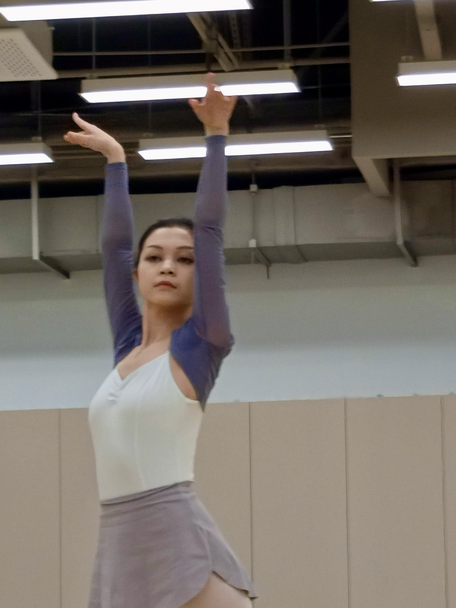
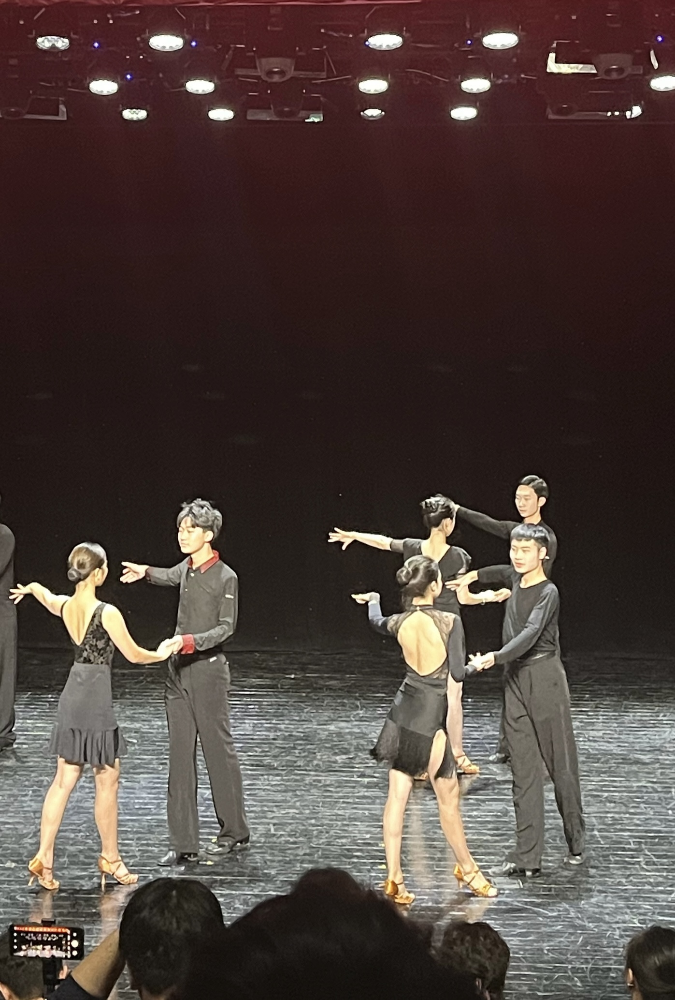
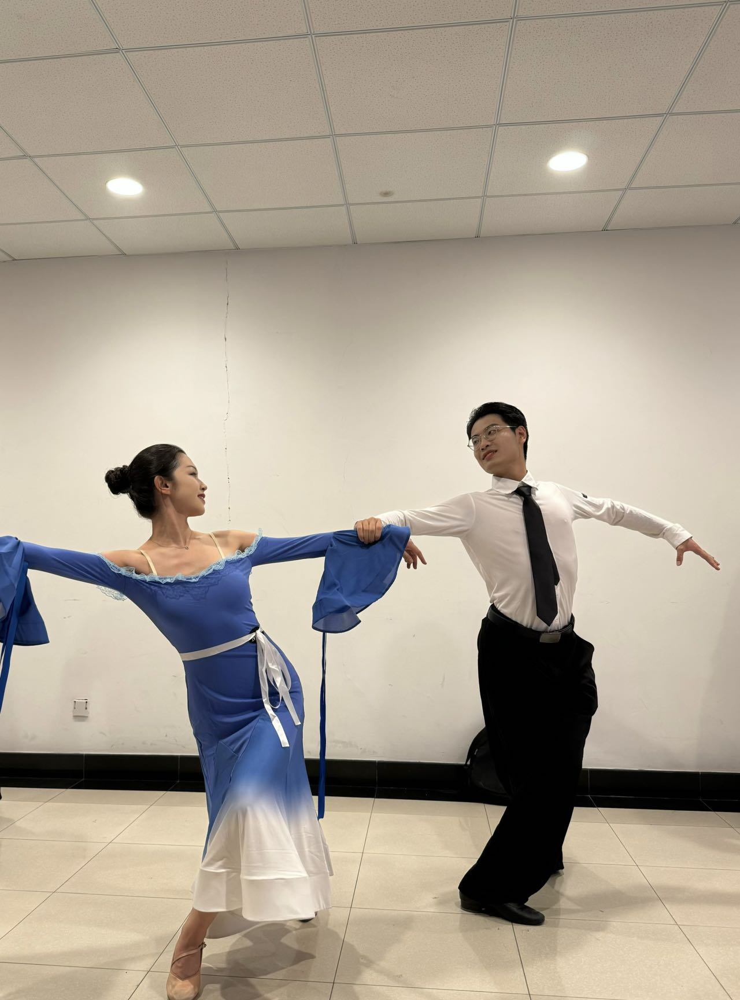
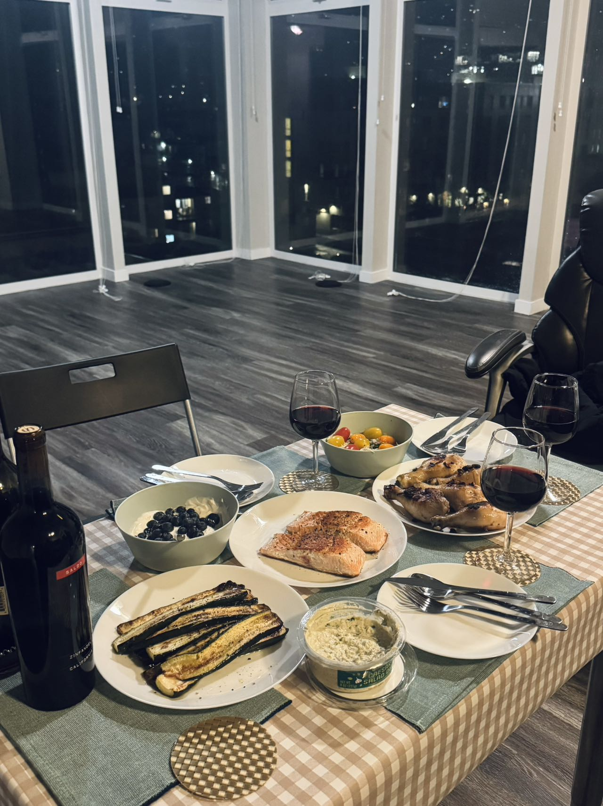

💃 Dance
I’ve been dancing on and off since kindergarten. Although I’m not a professional dancer, I always give my best on stage and strive to present every movement perfectly. In college, I focused on Chinese folk and ethnic dance, and I also spent some time learning jazz dance thanks to my mom. Eventually, I discovered my true passion—Latin dance. I love fast-paced rhythms that bring excitement and energy to both the dancer and the audience.



🍝 Cooking
I love cooking just as much as I enjoy exploring new restaurants. Italian and French cuisine are my favorites. For me, cooking is both an experiment and a form of relaxation—it’s where I unwind, create, and learn. Trying different ingredients and learning new recipes always brings me joy and a deeper appreciation for culture through food.

